Veja quem está trabalhando, confira o que cada agente entregou, passe tarefas ao gestor, guarde as decisões e a memória e acompanhe o custo. Com backup das conversas. Tudo no seu computador.
Projetos com IA crescem. E você enxerga cada vez menos.
01
Agentes trabalham sem você ver
Subagentes abrem, leem, escrevem e fecham. Quando você percebe, já terminaram.
02
Tokens custam
Todo contexto repetido e todo modelo grande demais para a tarefa vira conta no fim do mês.
03
Decisões se perdem
"Cupons não acumulam." Dito numa conversa, esquecido na próxima.
04
A qualidade cai
Sem conferência, entra no projeto trabalho que ninguém verificou.
05
O mapa some
Com tanto código novo, ninguém mais sabe como as partes se ligam.
Falta um lugar só para ver, conferir, lembrar e medir.
Cérebro do Projeto2 / 44
A ideia
Um cérebro local por projeto. Um gestor que delega e confere.
O Cérebro não troca o Claude Code: ele enxerga e organiza o trabalho que você já faz lá. O que já foi decidido e verificado fica guardado e não precisa ser explicado de novo.
Cérebro do Projeto3 / 44
O que tem
Um painel, vinte e quatro funções
Painel geraltodos os projetos e o que precisa de você
Primeiro usopassos guiados, ganchos recomendados
Visão geralnúmeros, gestora e fila
Agentes ao vivona hora pelos ganchos, anéis 5 h e semana
A conferirrevisão e % aprovado de primeira
Tarefasvocê pede, o gestor recebe; também no mapa
Sessão gestoraconversa longa sem toque, com capítulos
Manual do gestorGESTOR.md lido sozinho pela gestora
Memória e decisõeseditar, compactar, avisos, passa-bastão
Custos e orçamentolimites por dia, semana e mês
Mapao código em departamentos
Explicar com IAuma frase por ponto, só no clique
Ferramentaslista fechada, Rodar e Instalar
Análisepropostas sem IA, você decide
Novidadesversões novas, só GET público
Inventário e encaixeaplicar com prévia e Desfazer
Backupum .zip por dia e restauração sem apagar
Rotinas no Windowsrodam com o painel fechado
Avisos no Windowsquando algo precisa de você
Configuraçõesgestora, preços, agentes por tipo
Celulartelas que se ajustam
Linha de comandoo gestor registra sem abrir a página
Verificação no GitHubtestes a cada envio
Demonstraçãodados fictícios, nada seu
Em verde, o que chegou na 1.3.0. Nas próximas páginas: uma foto real da demonstração (dados fictícios), o que faz, um exemplo e o benefício.
Cérebro do Projeto4 / 44
Novo na 1.3.0
Mais proteção, mais controle, a gestora sempre em dia
Backup e restauração
Um .zip por dia das conversas e da memória, fora das pastas do Claude Code. Restaurar nunca apaga.
Rotinas no Windows
Backup, análise, novidades e mapa pelo Agendador, mesmo com o painel fechado.
Memória mais forte
Editar, criar, arquivar, compactar sem IA, avisos de memória velha e passa-bastão.
Conversa longa sem toque
Capítulo gravado e resumo devolvido em cada compactação automática. Manual do gestor automático.
Agentes na hora
Ganchos do Claude Code: "usando X", "precisa de você" e anéis de 5 h e da semana.
Avisos no Windows
Item a conferir, Claude Code esperando, sessão terminada, orçamento estourado.
Tarefas para o gestor
Crie na aba Tarefas ou no mapa. A gestora recebe como contexto.
Orçamento
Limites em US$ por dia, semana e mês, por projeto ou geral. Só avisa.
Instalar e encaixar
Instalar ferramentas e aplicar o plano de encaixe, com prévia, cópia e Desfazer.
Explicação por IA
Uma frase simples para os pontos do mapa sem texto, com estimativa antes.
Verificação no GitHub
ruff, testes e prova do instalador a cada envio, no Windows e no Linux.
Painel dashboard
Barra lateral, área principal sem rolagem, mapa no centro e o controle Espaço.
Regra de tudo o que é novo: o que escreve fora de ~/.cerebro só acontece com o seu clique de confirmação, mostrando antes o que muda, com cópia e sem apagar nada seu.
Cérebro do Projeto5 / 44
Painel geral
Todos os projetos numa tela só
Cada projeto que você abre no Claude Code aparece sozinho, com um cartão.
O que faz
Ramo, último commit, sessões recentes e agentes escrevendo agora
Custo de hoje e dos últimos 7 dias
Precisa de você, no pé da barra lateral, abre uma gaveta com o que espera uma decisão sua
Exemplo
Dois subagentes terminaram e ninguém conferiu. O número de Precisa de você sobe e, na gaveta, Abrir leva direto à fila.
Benefício
Você começa o dia sabendo o que pede sua atenção, sem abrir conversa por conversa.
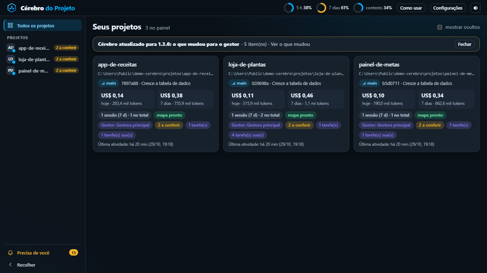
1234
1Precisa de você: o número de pendências; o clique abre a gaveta com cada uma e o botão Abrir
2Barra lateral: todos os projetos, com o selo a conferir
3Um cartão por projeto: pasta, ramo, commit, custo, gestora
4Faixa Cérebro atualizado, recolhida até você abrir
Cérebro do Projeto6 / 44
Primeiro uso
Seis passos e o painel está pronto
Na primeira abertura aparece a faixa Primeiro uso, que leva à tela Bem-vindo.
O que faz
Passos: seus projetos, sessão gestora, mapa, comandos sugeridos, ganchos (recomendado) e pronto
Dá para pular o que quiser e voltar depois
Cada passo explica o que vai acontecer antes de você clicar
Exemplo
No passo do mapa, o Graphify roda dentro do projeto só quando você clica em gerar.
Benefício
Sem manual: o próprio painel conduz, e nada acontece escondido.
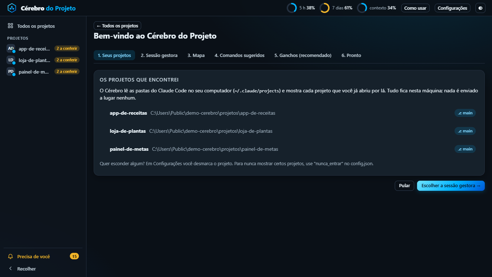
1234
1As seis etapas, sempre visíveis
2O que acontece, dito com clareza
3Os projetos achados (só leitura)
4Pular ou avançar, sem obrigação
Cérebro do Projeto7 / 44
Visão geral
O resumo do projeto num olhar
A primeira seção de cada projeto, na barra lateral, junta os números e o que está em andamento.
O que faz
Sessões, subagentes, agentes ativos, memórias, contexto fixo e custo
Atividade recente, com atalho Ver para o passo a passo
Cartão da sessão gestora e fila do gestor
Exemplo
Você vê que 2 subagentes esperam conferência e que 1 tarefa aprovada ainda não foi feita.
Benefício
Estado do projeto em segundos, sem procurar em lugar nenhum.
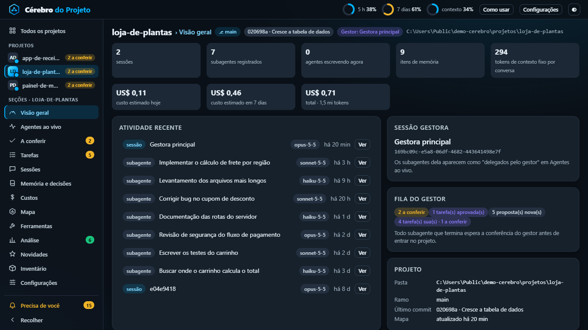
12345
1Números do projeto, inclusive o contexto fixo por conversa
2Atividade recente: sessões e subagentes
3Sessão gestora do projeto
4Fila do gestor: a conferir, tarefas aprovadas, propostas novas
5Seções do projeto na barra lateral, com contadores
Cérebro do Projeto8 / 44
Sessão gestora e sessões
A gestora nunca é trocada. Ela se renova.
A gestora é a conversa principal: você mais o melhor modelo.
O que faz
Conversa longa sem toque seu: antes de cada compactação automática grava um capítulo e logo depois devolve o resumo
Capítulo: onde parou, pergunta pendente, seus pedidos, ramo e commits. Limpar a conversa na mesma sessão é opcional (desligado)
A seção Sessões mostra, em abas internas, as conversas e a corrente (anterior → atual) com os capítulos
Exemplo
Conversa longa? O botão Gerar resumo monta o passa-bastão, sem IA. Transcrição antiga só sai se você autorizar, depois de 7 dias e com backup conferido.
Benefício
Continuidade sem perder o fio: memória, decisões e capítulos ficam para sempre.
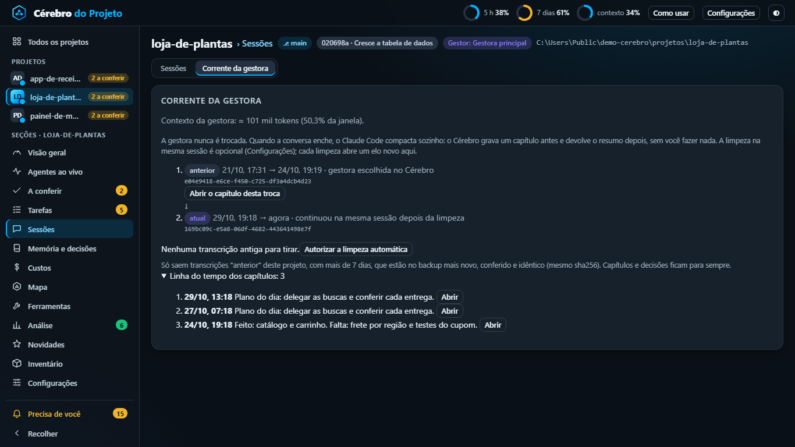
123456
1Contexto da gestora agora
2Transcrição anterior, com o capítulo da troca
3A atual, na mesma sessão
4Limpeza de transcrições antigas: só com a sua autorização
5Linha do tempo dos capítulos
6Abas internas: a lista de Sessões (passa-bastão) e a Corrente da gestora
Cérebro do Projeto9 / 44
Manual do gestor
A gestora aprende a usar o Cérebro sozinha
O Cérebro escreve um manual curto, o ~/.cerebro/GESTOR.md (menos de 1.500 tokens).
O que faz
Comandos, como delegar e conferir, e o que fazer em conversa longa
Refeito a cada versão; o painel mostra Cérebro atualizado e cada gestora recebe o aviso uma vez
Manual do gestor neste projeto: um bloco no CLAUDE.local.md, que fica fora do git
Exemplo
Ligou no projeto da loja: a próxima conversa já sabe registrar decisões e conferir subagentes.
Benefício
Você não precisa explicar o fluxo a cada conversa nova.
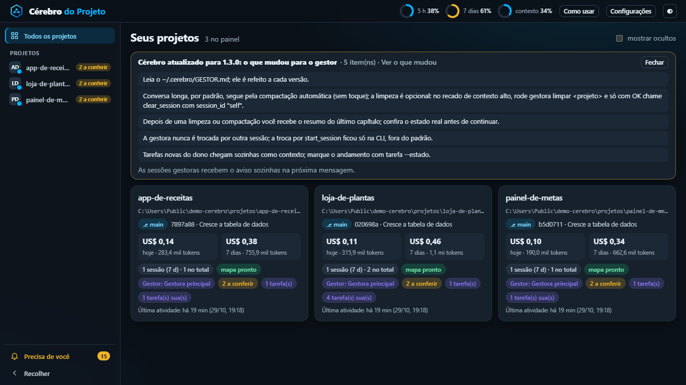
12
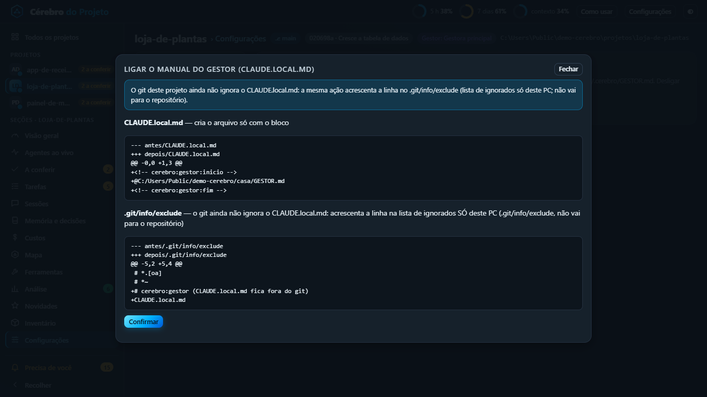
3456
1Faixa Cérebro atualizado: o que mudou para o gestor
2Cada gestora recebe o aviso uma vez
3Ligar o manual no projeto
4Prévia: o bloco no CLAUDE.local.md
5O arquivo fica fora do git (só neste PC)
6Confirmar: só depois de ver
Cérebro do Projeto10 / 44
Mapa
O código como um mapa vivo
Um grafo 2D do projeto, em departamentos coloridos. O motor é o Graphify, opcional.
O que faz
Você define os departamentos por pasta, curinga ou expressão regular
Clique num ponto para ler sobre ele no painel lateral; há também linha do tempo
Se atualiza sozinho quando o graph.json muda e avisa se o mapa está mais velho que o último commit
Exemplo
Loja dividida em Vitrine, Compra e Operação: dá para ver as ligações entre departamentos antes de pedir uma mudança grande.
Benefício
Entender a estrutura sem abrir arquivo por arquivo.
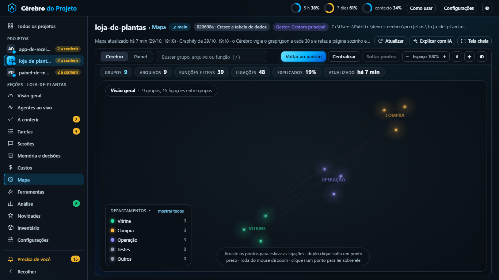
123456
1Números do mapa (recolhe no botão #)
2Legenda dos departamentos, recolhível
3Alternar Cérebro/Painel e buscar (tecla /)
4Atualizar, Explicar com IA e Tela cheia
5− Espaço +: afasta ou aproxima as bolinhas
6O grafo no centro: arraste, dê zoom, clique num ponto
Cérebro do Projeto11 / 44
Mapa · explicação por IA
Cada ponto do código com uma frase simples
A maioria das funções não tem texto. O botão Explicar com IA abre uma gaveta que pede ao Haiku uma frase para cada uma.
O que faz
Mostra antes a estimativa: pontos, chamadas e tokens
Vai só um trecho curto, com segredos mascarados; .env e chaves são pulados
A frase aparece marcada como explicação automática (IA)
Exemplo
Clicou em avisar_pedido_enviado(): o painel diz o que ela faz e oferece Criar tarefa aqui.
Atenção
Gasta tokens do seu plano e só roda quando você clica. Pode errar, por isso o rótulo.
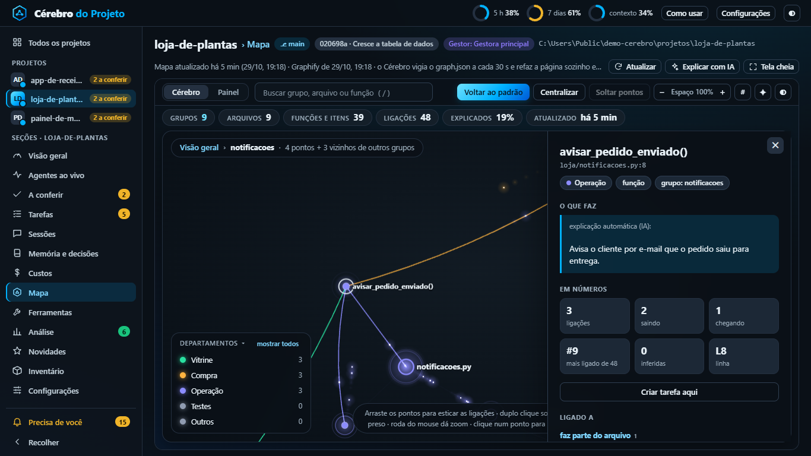
123456
1Buscar grupo, arquivo ou função
2Quanto do mapa está explicado (+ por IA)
3Explicação automática (IA)
4Criar tarefa aqui, já com o ponto do código
5O ponto escolhido e as ligações dele
6− Espaço + entre as bolinhas
Cérebro do Projeto12 / 44
Agentes ao vivo
Veja cada agente trabalhando, na hora
Árvore de sessão e subagentes em tempo real. Só leitura.
O que faz
Estado (trabalhando, parado, terminou), modelo, tempo, tokens e a regra aplicada
Com os ganchos ligados: muda na hora, mostra "usando X" e "precisa de você"; se o Cérebro estiver fechado, o gancho o liga
Anéis de limite de 5 horas e da semana na barra de cima, em todas as páginas
Exemplo
O Claude Code pediu permissão para rodar um comando: o chip precisa de você aparece e o Windows avisa.
Benefício
Você vê o que os agentes fazem sem interromper nenhum e sabe quanto do limite já usou.
12345
1Anéis: 5 horas, semana e contexto
2ao vivo pelos hooks
3precisa de você
4"usando Edit": a ferramenta agora
5Passo a passo ao vivo do agente escolhido
Cérebro do Projeto13 / 44
A conferir
Nada entra no projeto sem conferência
Todo subagente que terminou espera aqui até o gestor marcar o resultado.
O que faz
Marca: aprovado, corrigido ou recusado, com nota opcional
Conta quanto cada modelo acerta de primeira
O que fica parado há mais de 24 h aparece em destaque e em Precisa de você, na barra lateral
Exemplo
Na demonstração, o Haiku acertou 2 de 2 de primeira e o Sonnet 1 de 2. Dados fictícios, mas é esse o tipo de leitura.
Benefício
Com números reais, você escolhe o modelo mais barato que ainda acerta, sem abrir mão da revisão.
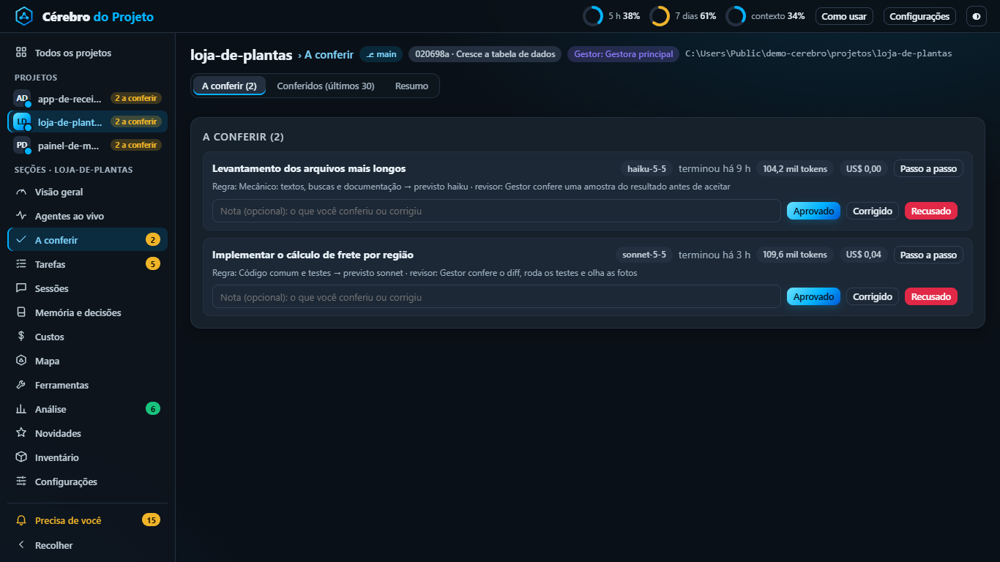
12345
1Abas: a conferir, conferidos e o resumo (% aprovado de primeira por modelo)
2Regra aplicada e quem revisa
3Nota opcional: o que foi conferido ou corrigido
4Aprovado, Corrigido ou Recusado
5Passo a passo do subagente
Cérebro do Projeto14 / 44
Tarefas para o gestor
Você pede. A gestora recebe.
Escreva o que quer que seja feito; a gestora recebe as tarefas novas como contexto da conversa.
O que faz
Título, descrição, prioridade, tipo de agente (ou o Cérebro sugere) e o lugar do código
Estados: nova, recebida, em andamento, a conferir, feita, recusada, com histórico
Filtros, busca, páginas numeradas e contador na barra lateral e em Precisa de você
Exemplo
"Revisar o cálculo de frete": a regra manda para o Opus e o gestor revisa linha a linha. Quando termina, você confere e marca feita.
Benefício
Nada fica esquecido numa conversa; você acompanha cada pedido até o fim.
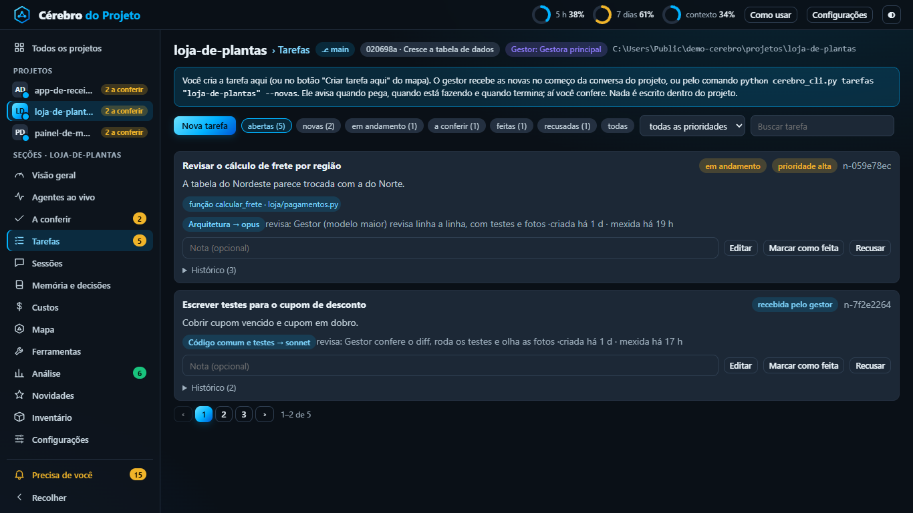
123456
1Nova tarefa
2Filtros por estado
3Estado e prioridade
4Ponto do mapa ligado à tarefa
5Tipo de agente → modelo → quem revisa
6Marcar como feita ou recusar, com nota
Cérebro do Projeto15 / 44
Tarefas · direto do mapa
Do ponto do código ao pedido em dois cliques
No mapa, escolha uma função, arquivo ou grupo e clique em Criar tarefa aqui.
O que faz
O ponto do mapa já vai preenchido (arquivo e linha)
O Cérebro sugere o tipo de agente pelas palavras do pedido
No mesmo mapa, a gaveta Explicar com IA mostra a estimativa antes de gastar
Exemplo
Na função do e-mail de pedido enviado: "Pôr o código de rastreio no começo". Pronto, a gestora recebe.
Benefício
Pedidos precisos, sem ter de explicar onde fica cada coisa.
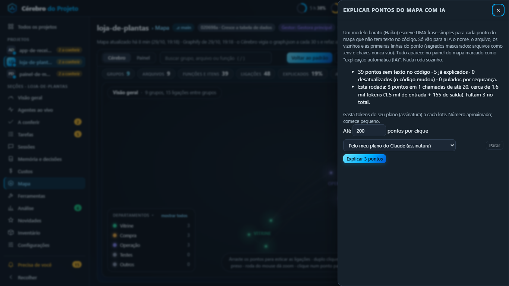
1234
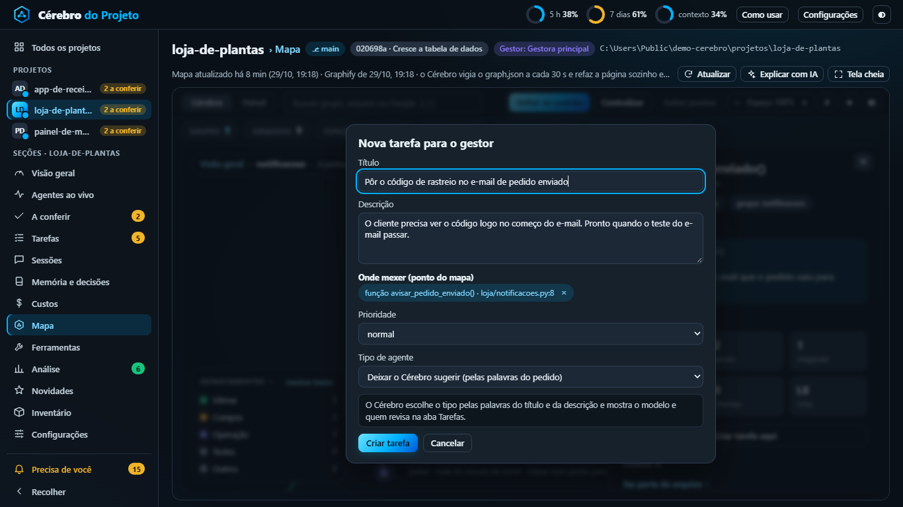
5678
1Quantos pontos sem texto e quantos já explicados
2Estimativa de tokens antes de gastar
3Pelo seu plano ou pela API
4Explicar (e Parar)
5Nova tarefa para o gestor
6Onde mexer: o ponto do mapa
7Tipo de agente (ou sugestão)
8Criar tarefa
Cérebro do Projeto16 / 44
Memória e decisões
O que foi decidido não se perde
A memória do Claude Code e as decisões do projeto, num lugar só.
O que faz
Memória (MEMORY.md, um arquivo por fato) mais CLAUDE.md e AGENTS.md, com busca e filtros
Contexto fixo: estimativa dos tokens que toda conversa paga antes de começar
Linha do tempo de decisões, regras e ideias, registradas na página ou pela linha de comando
Exemplo
Registrou "Cupons não acumulam" como decisão. O gestor lista depois com cerebro_cli.py decisoes.
Benefício
Regras ficam à vista, e você enxerga o peso do que carrega em toda conversa.
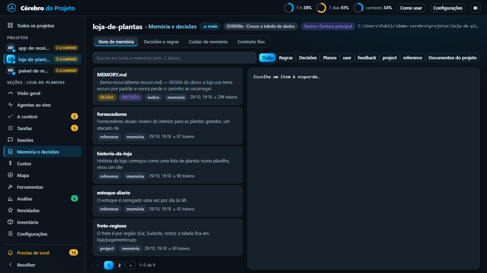
12345
1Abas internas: itens, decisões e regras, cuidar da memória, contexto fixo
2Busca em toda a memória
3Filtros: regras, decisões, planos, tipos e documentos
4Cada item: REGRA/DECISÃO, data e tokens
5Páginas numeradas no lugar da rolagem
Cérebro do Projeto17 / 44
Memória mais forte
Cuidar da memória sem medo de estragar
A aba Cuidar da memória cria, edita e arquiva memórias e aponta o que merece revisão.
O que faz
Toda gravação mostra a diferença, guarda cópia e recusa se o Claude Code mexeu no arquivo no meio
Arquivar move para memory/_arquivo/: nada é apagado
Avisos: memória velha que fala de "em andamento", que cita arquivo que não existe ou que contradiz outra
Exemplo
A nota "migração em andamento" não muda há 95 dias: o aviso pede para você conferir. Nada muda sozinho.
Benefício
Memória limpa e confiável, sem regra perdida.
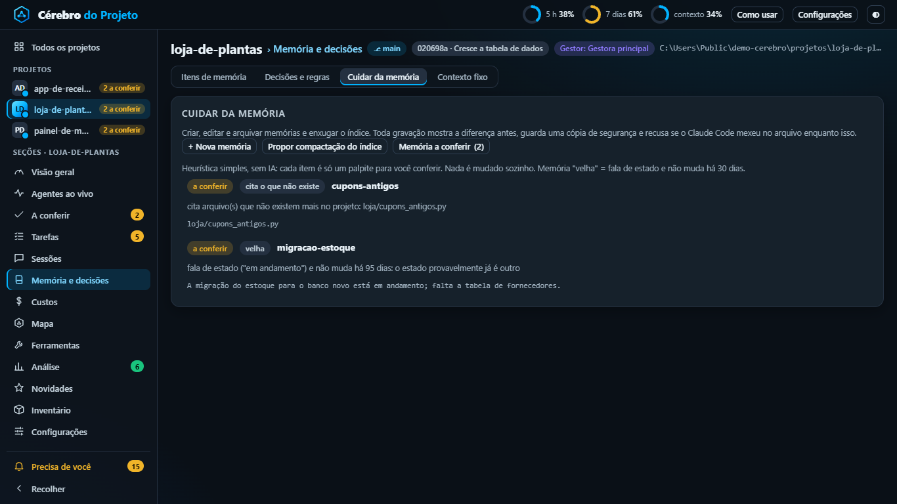
1234
1Nova memória, propor compactação e memória a conferir
2Cita arquivo que não existe mais
3Memória velha falando de estado
4Decisões: editar e arquivar (aba Decisões e regras)
Cérebro do Projeto18 / 44
Memória mais forte · compactar e passar o bastão
Menos tokens por conversa, nenhuma regra a menos
Propor compactação do índice encurta o MEMORY.md sem IA, e prova antes de gravar.
O que faz
Linhas com palavra de regra ("nunca", "sempre", "só", "não"...) ficam inteiras, letra por letra
Um verificador confere 10 garantias e mostra o antes e o depois
Passa-bastão: conversa longa ganha um resumo pronto para continuar noutra, sem IA
Exemplo
Na demonstração: de cerca de 294 para 230 tokens em toda conversa, só encurtando dois textos longos.
Benefício
Economia que se repete em cada conversa, sem perder o que foi decidido.
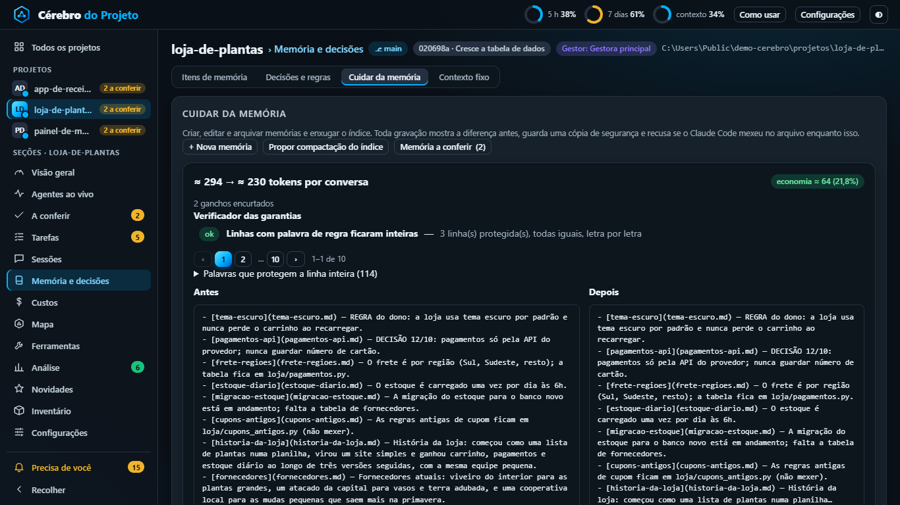
12345
1Tokens antes → depois
2Quanto economiza
3Verificador das garantias
4Antes e depois, lado a lado
5As 10 garantias, uma por página
Cérebro do Projeto19 / 44
Custos e orçamento
Para onde vão os tokens, e até onde podem ir
Soma o uso das mensagens e multiplica pela tabela de preços (estimativa pelo preço de lista).
O que faz
Entrada, saída e cache por modelo, sessão, subagente e dia
Orçamento por dia, semana e mês, por projeto ou geral, com barra e projeção do mês
Aviso a partir de 80% (ajustável) no painel e no Windows, no máximo 1 vez por dia
Exemplo
A loja passou do limite da semana: a barra fica vermelha e o aviso aparece em Precisa de você.
Benefício
Você decide com dado. O Cérebro só avisa, nunca bloqueia; pode diferir da fatura.
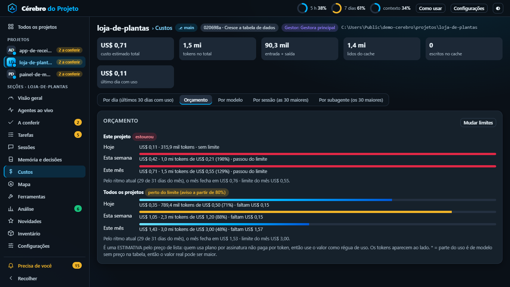
123456
1Abas: por dia, orçamento, por modelo, sessão e subagente
2Este projeto: passou do limite
3Projeção do mês
4Todos os projetos: perto do limite
5Mudar limites (Configurações › Orçamento)
6Custo total, tokens e cache
Cérebro do Projeto20 / 44
Num projeto real · medido
Um dia de trabalho: 220 milhões de tokens, US$ 44 pelo preço de lista
Um projeto real do autor, medido pelo próprio Cérebro: os tokens que o Claude Code grava em cada resposta, vezes a tabela de preços.
220,4 mitokens no dia (entrada, saída e cache)medido
US$ 44,38pelo preço de lista (pode diferir da fatura)medido
2 + 4conversas da gestora + subagentes, 645 respostasmedido
4 de 4subagentes num modelo menor (Sonnet); a gestora no Opusmedido
Período curto
29/10/2026, das 11h30 às 18h18: o primeiro dia do Cérebro nesse projeto. É um dia, não uma média.
Cérebro do Projeto21 / 44
Num projeto real · estimado
O que a delegação e a memória enxuta economizam
Duas estimativas sobre o mesmo dia, com a conta aberta.
Como foi estimado
Delegação: os mesmos tokens dos subagentes com o preço do Opus. O mesmo trabalho no Opus poderia usar outra quantidade de tokens.
Memória: a compactação que o Cérebro propõe (sem aplicar), vezes as 125 respostas da gestora em 2 conversas. Semana: 14 conversas (2 por dia).
De quem é o mérito
O Cérebro dá a regra tipo de tarefa → modelo → revisor e confere cada subagente. Neste dia, quem pôs os subagentes no Sonnet foi a configuração do Claude Code.
Resultado
Delegar custou cerca de 37% menos do que tudo no Opus. A memória já estava enxuta: compactar economiza pouco aqui.
Cérebro do Projeto22 / 44
Ferramentas
Qualidade a um clique, só o que você aprovou
O Cérebro lê o projeto e sugere comandos. Você aprova o que quer.
O que faz
Detecta 10 ferramentas só lendo: ruff, ESLint, clippy, gitleaks, Semgrep, pip-audit, cargo-deny, OSV-Scanner, coverage e Lighthouse
Só os comandos da lista fechada têm botão Rodar
Sem shell, com tempo limite, saída mascarada, histórico das últimas 20 execuções
Exemplo
Aprovou python -m unittest discover. Um clique roda e guarda a saída.
Benefício
Rodar verificações sem abrir terminal e sem risco de executar algo que você não aprovou.
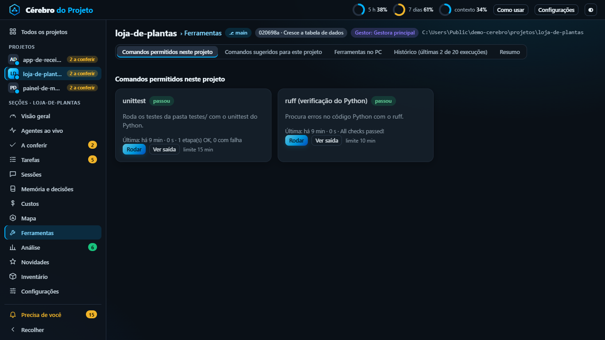
123
1Abas: permitidos, sugeridos, ferramentas no PC, histórico, resumo
2Rodar: só nos comandos aprovados
3Ver a saída (mascarada) e o tempo limite
Cérebro do Projeto23 / 44
Ferramentas · instalar
Instalar o que falta, vendo o comando antes
As ferramentas não instaladas ganham o botão Instalar….
O que faz
Receitas fechadas no código: ruff, pip-audit, coverage, Semgrep, cargo-deny, gitleaks e Lighthouse
Mostra o comando exato, de onde vem, onde instala, tamanho e tempo
Sem shell, sem administrador, uma por vez, com histórico
Exemplo
pip-audit avisa de pacote Python com falha conhecida. Marque "Conferi o comando" e confirme.
Benefício
Qualidade e segurança sem decorar comandos e sem surpresa.
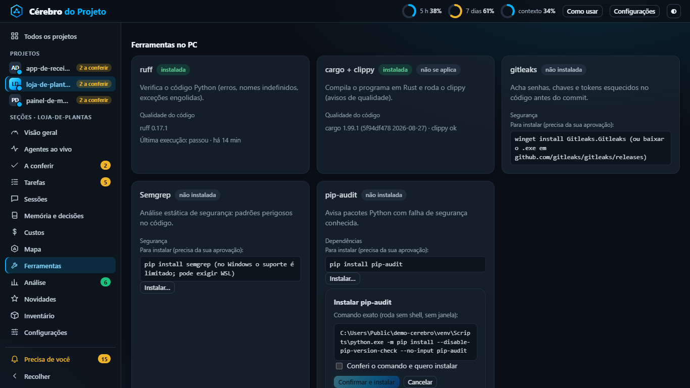
12345
1O que não está instalado
2Instalar…
3Comando exato, sem shell
4Conferi o comando
5Confirmar e instalar (ou Cancelar)
Cérebro do Projeto24 / 44
Análise e autoevolução
O projeto propõe como melhorar. Você decide.
O botão Analisar agora não usa IA, então não gasta tokens.
O que faz
Olha git, mapa, ferramentas, custos, contexto fixo e a fila a conferir
Gera propostas com motivo, esforço (P/M/G) e risco
Aprovada vira tarefa para o gestor; descartada some. Nada é aplicado sozinho
Exemplo
Achou um arquivo com mais de 1500 linhas e propõe dividir. Você aprova, o gestor faz e marca como feita.
Benefício
Melhoria contínua com você no comando. Pode rodar sozinha no intervalo que escolher, com o servidor aberto.
4Marcar como feita (ou aprovar/descartar, nas propostas)
Cérebro do Projeto25 / 44
Vigia de novidades
Versões novas, sem caçar notícia
Procura versões novas do Claude Code, do Graphify e das ferramentas de qualidade.
O que faz
Só um GET na API pública de releases do GitHub, sem login
Nada do seu projeto é enviado
Ferramenta instalada desatualizada vira proposta. Sem rede, avisa e não quebra
Exemplo
Você clica em Procurar novidades e vê o que saiu desde a última vez.
Benefício
Fica por dentro do ecossistema sem sair do painel. Só roda quando você manda (ou se ligar a opção).
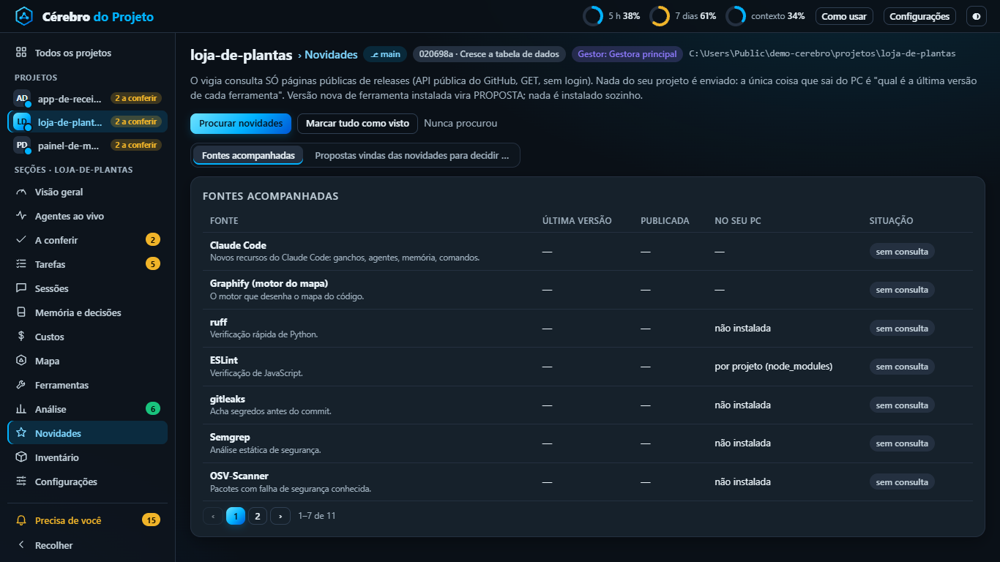
1234
1Procurar novidades: sempre sob demanda
2Texto que diz exatamente o que sai do PC
3Fontes acompanhadas e o que você já tem
4Situação de cada fonte
Cérebro do Projeto26 / 44
Inventário e encaixe
Encaixa no que o projeto já tem, e você aplica
Antes de propor qualquer coisa, o Cérebro só lê o projeto.
O que faz
Mostra o que existe: instruções, testes, lint, CI, ganchos, agentes, memória e mapa
Cada item do plano de encaixe tem Ver o que muda e aplicar…: arquivos e diferença antes
Só cria ou acrescenta um bloco marcado, guarda cópia e tem Desfazer
Exemplo
Projeto sem CLAUDE.md: a prévia mostra o arquivo novo com o bloco do gestor. Você confere e aplica.
Benefício
Adoção sem bagunçar o que já funciona. Projetos ocultos e a lista nunca_escrever são recusados.
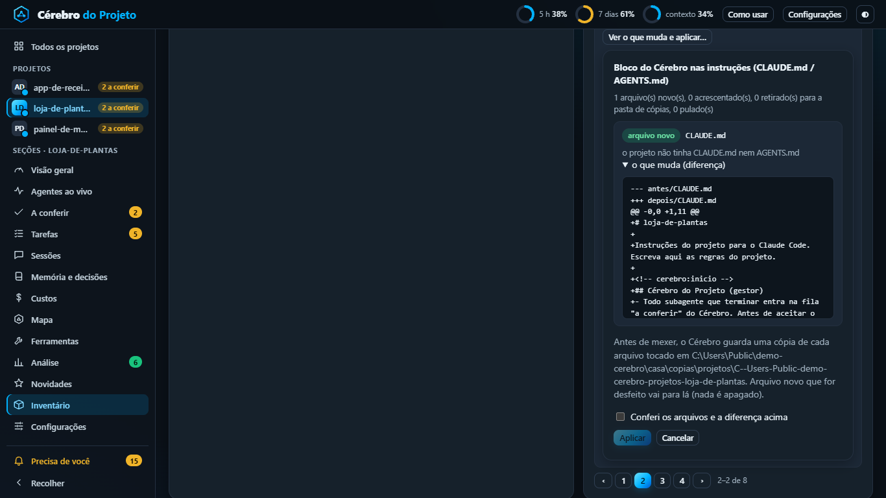
12345
1Ver o que muda e aplicar…
2Arquivo novo ou bloco acrescentado
3A diferença exata, antes de gravar
4Conferi os arquivos e a diferença
5Aplicar (só depois de conferir) ou Cancelar
Cérebro do Projeto27 / 44
Agentes por tipo de tarefa
O modelo certo para cada trabalho
Uma tabela simples: tipo de tarefa → modelo → quem revisa.
O que faz
Padrão: crítico no Opus, código comum no Sonnet, mecânico no Haiku
A primeira regra que casa com a descrição da tarefa vale
Todo resultado passa pelo gestor, seja qual for o tipo
Exemplo
O botão Gerar prévia cria os arquivos de agente dentro de ~/.cerebro. Copiar para .claude/agents do projeto é um passo à parte, com prévia e confirmação.
Benefício
O modelo barato faz o trabalho barato, o forte fica para o que importa, e a revisão continua.
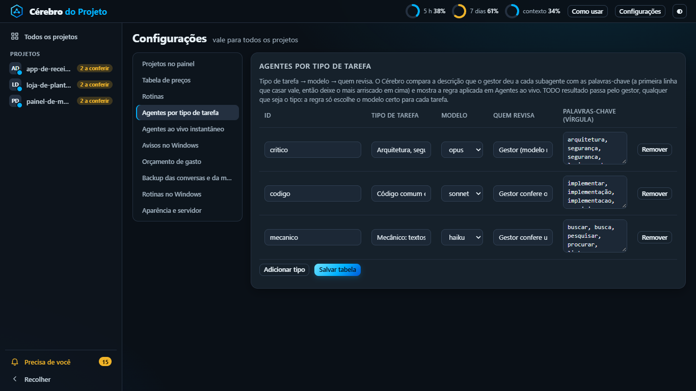
123456
1Tipo de tarefa
2Modelo
3Quem revisa
4Palavras-chave (a primeira que casa vale)
5Adicionar tipo e salvar a tabela
6Menu de seções das Configurações
Cérebro do Projeto28 / 44
Configurações
Tudo ajustável, tudo local
Os ajustes ficam em ~/.cerebro/config.json, fora do seu repositório.
O que faz
Sessão gestora e apelido; projetos visíveis ou ocultos; adicionar uma pasta
Tabela de preços por milhão de tokens, editável
Rotinas, departamentos do mapa, tema, porta e encerrar o servidor
Exemplo
Mudou o preço de um modelo? Edite a linha e salve. Os custos passam a usar o valor novo.
Benefício
O painel se adapta ao seu jeito de trabalhar, sem mexer em código.
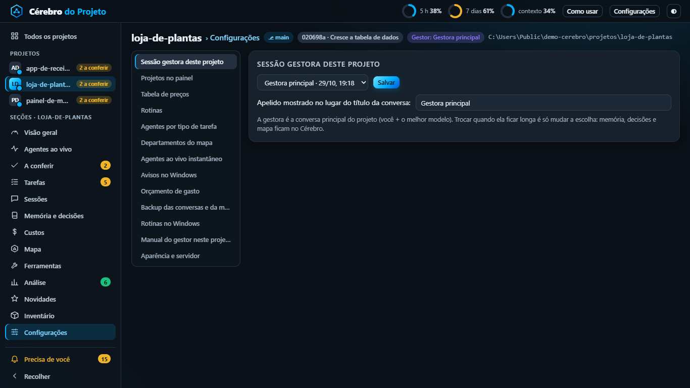
1234
1Menu de seções (as do projeto e as gerais)
2Sessão gestora deste projeto
3Apelido no lugar do título da conversa
4Salvar
Cérebro do Projeto29 / 44
Configurações · rotinas e mapa
Rotinas e departamentos sob controle
Estas rotinas rodam com o servidor aberto, e só se você ligar. Para rodar com o painel fechado, veja Rotinas no Windows.
O que faz
Análise automática a cada N dias (opcional)
Busca de novidades sozinha: desligada por padrão
Departamentos do mapa com nome, cor e caminhos; tema claro ou escuro; porta; tempo sem página aberta
Exemplo
Defina loja/carrinho, loja/pagamentos como o departamento Compra e salve para refazer o mapa.
Benefício
Mapa e rotinas do jeito do projeto, sem nada escondido no sistema.
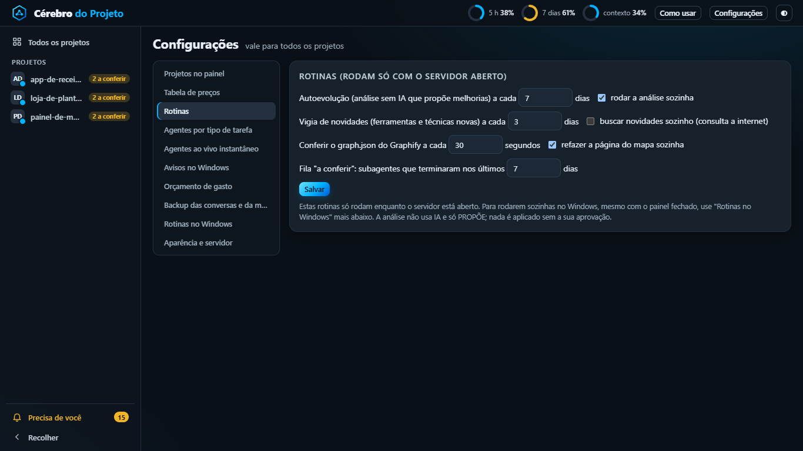
1
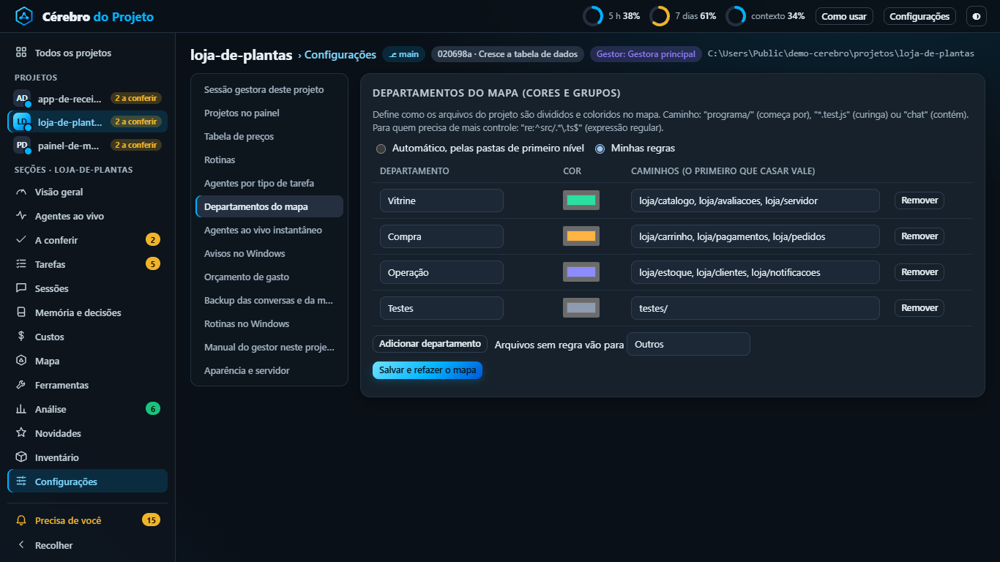
2345
1Rotinas: análise, novidades, vigia do mapa e janela da fila
2Automático (pelas pastas) ou as suas regras
3Departamento: nome, cor e caminhos
4Remover o departamento
5Salvar e refazer o mapa
Cérebro do Projeto30 / 44
Backup e restauração
Suas conversas e a memória, guardadas fora do Claude Code
Um .zip por dia com as conversas e a memória de todos os projetos e os dados do Cérebro.
O que faz
Fica fora de .claude e .cerebro (padrão ~/CerebroBackup); guarda 7 dias
Confere cada cópia (lista com SHA-256) e protege a boa se a nova vier bem menor
Restaurar: mostra o que falta, o que mudou e o que só cresceu; devolve o que falta e só troca o resto se você marcar
Exemplo
Uma conversa sumiu? Escolha o dia, veja o que mudaria e restaure. A versão de hoje vai antes para uma pasta de cópias.
Benefício
Nada é apagado. Se alguém apagar uma das pastas, o backup sobrevive.
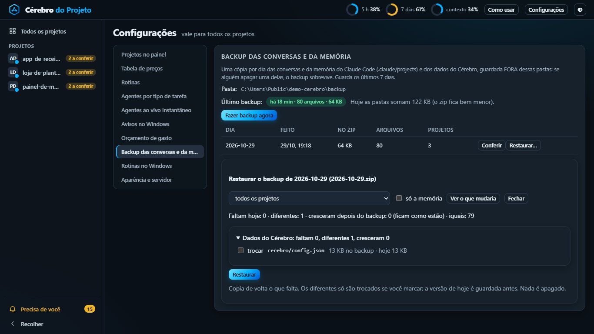
123456
1Pasta do backup, fora das outras
2Fazer backup agora e o último backup
3Conferir e Restaurar…
4O que mudaria: falta, diferente, cresceu
5Trocar só o que você marcar
6Restaurar: copia de volta, nada é apagado
Cérebro do Projeto31 / 44
Rotinas no Windows
O que precisa rodar, roda, mesmo com o painel fechado
Com o seu sim, o Cérebro cria tarefas no Agendador de Tarefas do Windows.
O que faz
Backup diário (e ao entrar no Windows, se o PC estava desligado)
Análise a cada 7 dias, novidades a cada 3 e a página do mapa a cada 6 horas
Só tarefas da pasta CerebroDoProjeto, do seu usuário, sem senha e sem administrador
Exemplo
Ligou o backup diário às 12:30: cada rotina guarda um registro e o último resultado, que aparece aqui.
Atenção
Na demonstração o Agendador não é usado. No macOS e no Linux esta parte mostra "só no Windows".
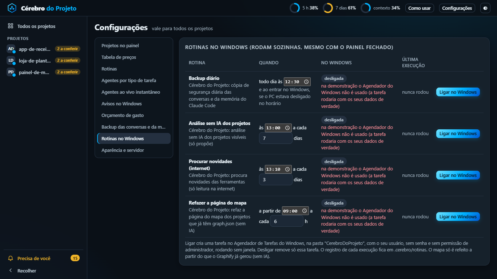
12345
1Backup diário
2Quando roda
3Estado no Windows
4Ligar no Windows (e Desligar)
5Só a pasta CerebroDoProjeto, sem administrador
Cérebro do Projeto32 / 44
Agentes instantâneos e avisos
Ganchos do Claude Code, ligados só com o seu sim
Os ganchos fazem o Claude Code avisar o Cérebro na hora. Eles mexem no settings.json, por isso:
O que faz
Ver o que muda mostra a diferença exata; Ligar pede confirmação e guarda cópia antes
Preserva o que você já tinha; Desligar tira só as linhas do Cérebro
Avisos no Windows: liga e desliga por tipo, "não perturbe" e Testar aviso
Exemplo
Um subagente da gestora terminou: o Windows avisa que chegou item a conferir.
Benefício
Você não precisa ficar olhando a tela para saber quando é a sua vez.
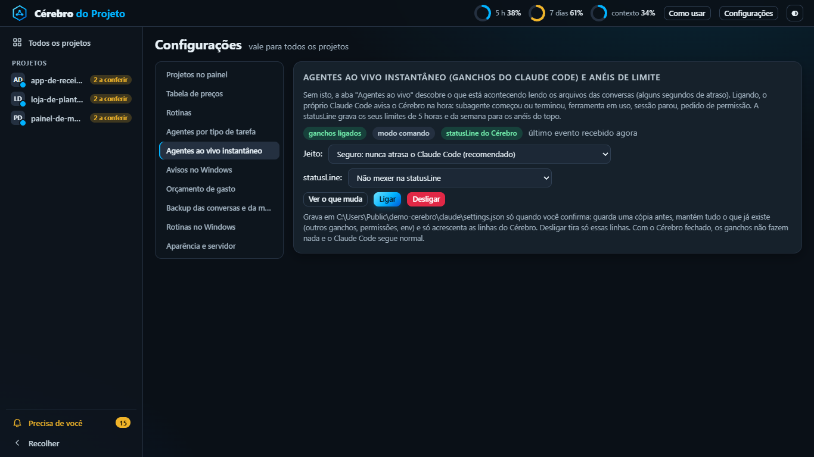
123
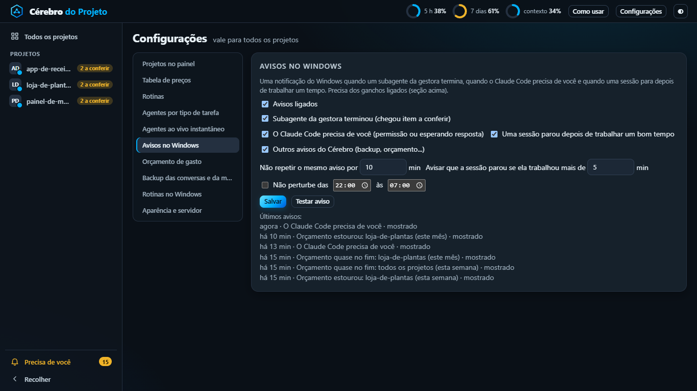
456
1Ganchos e statusLine ligados
2Ver o que muda e Ligar
3Desligar: tira só as linhas do Cérebro
4Quais avisos você quer
5Não perturbe por horário
6Testar aviso
Cérebro do Projeto33 / 44
Versão no celular
Telas que se ajustam, sem rolar para o lado
Em janela estreita (testado em 390 px), o painel se reorganiza.
O que faz
Painel geral, visão geral e ferramentas legíveis em tela pequena
Mesmas funções da versão larga
A barra lateral vira um menu ☰ e a página rola só para baixo
Exemplo
Reduza a janela do navegador ao lado do editor e continue acompanhando a fila.
Atenção
O servidor escuta só em 127.0.0.1. O ajuste vale para janelas estreitas no próprio computador; o celular não acessa o painel.
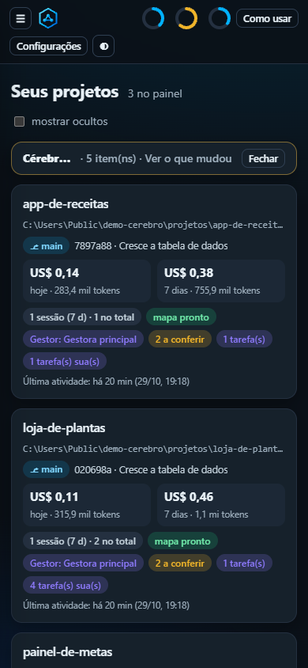
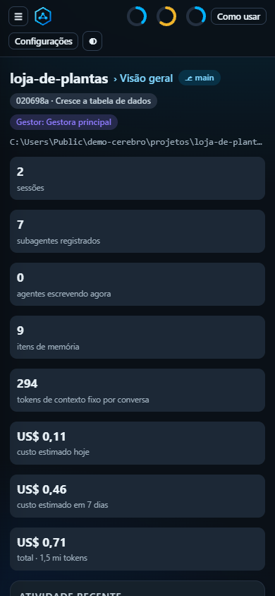
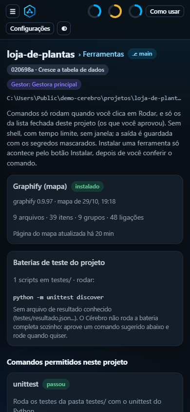
Cérebro do Projeto34 / 44
Linha de comando do gestor
O gestor registra sem abrir a página
A conversa principal pode conferir e registrar direto do terminal. Funciona com o servidor fechado e grava nos mesmos arquivos da página.
O que faz
estado, a-conferir e conferir: a fila de conferência
decisao, tarefas, tarefa --estado e orcamento
gestora limpar: grava o capítulo antes da limpeza (opcional)
O gestor confere e registra no próprio fluxo, e você vê tudo no painel. O que escreve fora de ~/.cerebro só grava com --confirmar.
terminal
# fila e contadores
python cerebro_cli.py estado <projeto>
python cerebro_cli.py a-conferir <projeto># conferir um subagente
python cerebro_cli.py conferir <projeto><id-ou-descrição> \
--resultado aprovado|corrigido|recusado --nota "..."
# registrar o que foi decidido
python cerebro_cli.py decisao <projeto> "texto" \
--tipo decisao|regra|ideia --origem dono|gestor
# tarefas e a gestora (limpar é opcional)
python cerebro_cli.py tarefas <projeto> --novas
python cerebro_cli.py tarefa <projeto><id> --estado andamento
python cerebro_cli.py gestora limpar <projeto># proteção (sem --confirmar, só a prévia)
python cerebro_cli.py backup --agora
python cerebro_cli.py hooks --previa
<projeto> aceita o nome, o slug ou o caminho.
Cérebro do Projeto35 / 44
Verificação automática
Cada mudança testada sozinha no GitHub
1
ruff
Procura erros de Python que quebrariam o painel (nome errado, import faltando, exceção engolida).
2
Testes
A suíte inteira, isolada em pastas temporárias: nunca toca nas suas conversas, no settings.json nem no Agendador.
3
PC limpo
Instala, sobe o servidor, abre a página, encerra e desinstala numa máquina nova, no Windows e no Linux.
Sem segredo
O roteiro só lê o código; não usa senha nem chave.
Dependabot
Uma vez por semana avisa de versão nova das dependências.
Nada pessoal
Um teste procura nome, e-mail e caminho pessoal em todos os arquivos.
Cérebro do Projeto36 / 44
Na prática
Um ciclo de trabalho com o Cérebro
1
Abrir o painel
Precisa de você, no pé da barra lateral, mostra o que espera.
2
Pedir e delegar
Você cria uma tarefa; a gestora recebe e manda a subagentes. O painel mostra a regra aplicada.
3
Acompanhar
Agentes ao vivo: estado, modelo, tokens e passo a passo.
4
Conferir
O subagente terminou e entrou em A conferir. O gestor vê o diff e roda os testes.
5
Registrar
Aprovado, corrigido ou recusado. Decisões e regras vão para a linha do tempo.
6
Guardar e evoluir
O backup guarda tudo e os capítulos mantêm a gestora em dia. Analisar agora propõe melhorias.
O ciclo se repete a cada tarefa. O que foi aprendido fica guardado para a próxima.
Cérebro do Projeto37 / 44
Economia de tokens
Qualidade primeiro. A economia vem da memória.
1
Memória persistente
Decisões, regras e a memória do Claude Code ficam guardadas. O que já foi decidido e verificado é reaproveitado, em vez de explicado de novo.
2
Modelo certo por tarefa
Tarefa mecânica no modelo menor, código comum no intermediário, o crítico no maior. A regra fica à vista em cada subagente.
3
Revisão do maior
Todo resultado passa pelo gestor antes de entrar. Delegar não dispensa a verificação, e a economia não vem de pular a revisão.
4
Você mede
Contexto fixo em tokens, custo por modelo e dia, e % aprovado de primeira. A análise é sem IA, então não gasta tokens.
O Cérebro não promete um percentual de economia. Ele mostra onde seus tokens vão e deixa as regras explícitas, para você ajustar com dados.
Cérebro do Projeto38 / 44
Segurança e privacidade
Tudo no seu computador. Nada sai.
Só 127.0.0.1
O servidor escuta apenas neste computador (o código não aceita outro endereço) e exige uma chave aleatória, guardada num cookie HttpOnly.
Nada sai do PC
Sem conta, sem nuvem, sem telemetria. Só quando você clica: a consulta pública de versões (Novidades) e a explicação do mapa por IA, com trechos curtos e mascarados.
Segredos mascarados
Chaves, senhas, tokens e URLs com senha que aparecem em conversas viram [segredo oculto] antes de ir para a tela.
Lista fechada de comandos
Só roda o que você aprovou, com o seu clique. Sem shell, com tempo limite e saída mascarada.
Cérebro do Projeto39 / 44
Segurança e privacidade
O que lê, o que escreve, o que nunca faz
Lê e grava sem perguntar
Lê as conversas e a memória do Claude Code, o git e o graphify-out
Grava só em ~/.cerebro: configuração, decisões, tarefas, capítulos, histórico
Só com o seu sim
settings.json (ganchos), Agendador (só CerebroDoProjeto), pasta de backup
Memória, restauração, CLAUDE.local.md, plano de encaixe, instalar ferramentas
Nunca faz
Apagar o que é seu
Rodar comando que você não aprovou
Mexer em tarefa agendada que não seja dele
Sempre com prévia
Mostra a diferença, guarda cópia em ~/.cerebro/copias, grava de forma atômica e permite desfazer.
Travas de remoção
Uma trava central. Exceções estreitas: backups antigos e, se você autorizar, transcrições antigas da gestora já guardadas.
Proteção do servidor
Só 127.0.0.1, Host e Origin conferidos, CSP restritiva; os ganchos têm segredo próprio.
Cérebro do Projeto40 / 44
Como começar
Do clone ao painel em três comandos
O que você precisa
Sistema
Windows 10/11 (com atalho). macOS e Linux funcionam, sem atalho automático.
Python
3.11 ou mais novo. O instalador cria um .venv só para o Cérebro.
Claude Code
O Cérebro lê as conversas que ele guarda. Sem conversas, o painel abre vazio.
Git
Opcional: mostra ramo e último commit.
Graphify
Opcional: só para o mapa. O instalador pergunta antes.
instalação
git clone <endereço do repositório>
cd cerebro-do-projeto
python instalar.py
Sem Git?
No GitHub, botão verde Code › Download ZIP, descompacte e rode python instalar.py na pasta.
O que o instalar.py faz
Confere o Python e cria o .venv com dependências de versão fixa
Oferece o Graphify e os ganchos (mostra a diferença; só com o seu sim)
Cria ~/.cerebro e, se quiser, o atalho na área de trabalho
Abre o painel. Pode rodar de novo sem estragar nada
Cérebro do Projeto41 / 44
Como começar
Primeiro uso guiado, ou veja a demonstração sem dados
1
Abrir
Clique no atalho Cérebro do Projeto, ou rode abrir_cerebro.bat (Windows) ou ./abrir_cerebro.sh (macOS e Linux). O navegador abre em 127.0.0.1:8188 já com a chave.
2
Primeiro uso
A faixa Primeiro uso leva ao passo a passo: projetos, gestora, mapa e comandos sugeridos. Pode pular e voltar.
3
Ver sem dados seus
Rode python demo/rodar_demo.py. Sobe o Cérebro com projetos 100% fictícios, com tarefas, orçamento, capítulos e backup: seu ~/.cerebro e seu ~/.claude não são usados.
Atualizar
git pull e python instalar.py. A configuração é migrada sozinha e o que você ajustou é mantido.
Desinstalar
python desinstalar.py pergunta a cada passo: atalho, .venv, tarefas, ganchos e, à parte, ~/.cerebro e os backups.
Fechar
O servidor encerra sozinho após 30 minutos sem página aberta. Também há um botão para encerrar.
Cérebro do Projeto42 / 44
Limites conhecidos
O que ainda não foi visto funcionando de verdade
Ganchos e gestora vistos no app real
Ganchos, capítulos e a limpeza da gestora funcionaram com o Claude Code real (29/10). Falta ver a retenção de transcrições antigas.
Agendador e avisos do Windows
A tarefa agendada e o aviso na tela não foram vistos num Windows de verdade. Use Testar aviso; erro aparece na página.
Instalar ferramentas
Nenhum pip, winget, cargo ou npm real rodou nos testes. O comando aparece antes; confira.
Verificação no GitHub
O roteiro está pronto, mas só roda quando o repositório estiver no GitHub.
Estimativas
Custo é pelo preço de lista. Avisos de memória são por palavras e podem dar alarme falso.
Sem os ganchos
Os agentes ao vivo vêm da leitura dos arquivos (cerca de 1 s de atraso) e as tarefas chegam pela linha de comando.
Lista completa e honesta em docs/referencia.md, seção Limites conhecidos.
Cérebro do Projeto43 / 44
Cérebro do Projeto
Gestão visual para quem trabalha com agentes
Motor do mapaGraphify (Apache-2.0, de safishamsi), instalado à parte e opcional
LicençaMIT, código aberto
Versão1.3.0
Claude Code é um produto da Anthropic. O Cérebro do Projeto é um projeto independente e funciona ao lado dele.
Código aberto no GitHub: cerebro-do-projeto · README, CONTRIBUTING e SECURITY no repositório